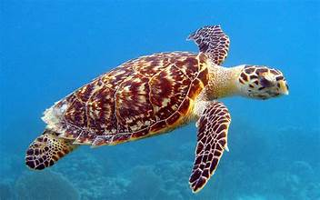
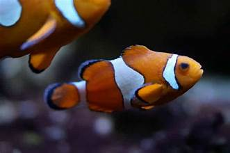
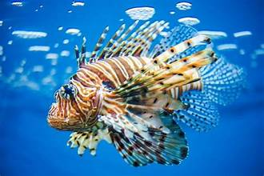
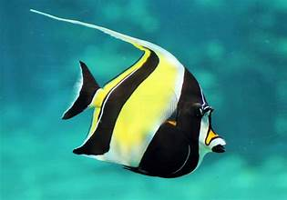

Penyu adalah hewan yang banyak ditemukan bertelur di beberapa pesisir pantai di Indonesia sejak dulu.

Ikan Badut ini dapat dikenali dengan warna jingganya, ikan ini tumbuh mencapai 8 cm serta termasuk dalam ikan terpopuler di dunia.

Lion Fish
Lion Fish atau volitans adalah ikan berbisa milik keluarga yang Scorpaenidae terjemahan harfiah berarti ikan kalajengking.

Ikan Moorish Idol adalah salah satu ikan yang cukup populer dikalangan ara hoobis ikan hias karena bentuknya yang unik dan pola warna nya yang menarik.